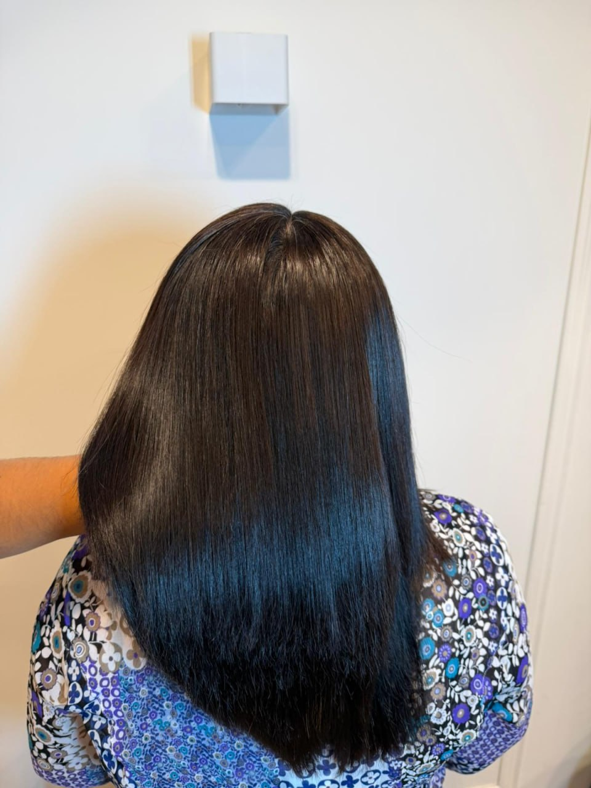

Keratine behandeling in Elst: pluisvrij, zacht en makkelijk stylbaar haar
Pluis, kroes en haar dat maar niet lekker wil zitten? Een keratine of smoothing treatment bij Selé Beauty Studio maakt je haar zachter, gladder en veel makkelijker te stylen — tot wel 6 maanden lang.

Wat is een keratine behandeling?
Bij een keratine- of smoothing-behandeling wordt keratine — het eiwit waar je haar van nature uit bestaat — diep in het haar aangebracht. Dit vult beschadigde plekken op, vermindert pluis en maakt het haar gladder. Het resultaat? Haar dat sneller droogt, makkelijker stylt en langer mooi blijft.
Onze drie keratine behandelingen
The Botox Glow (€90) — een intensieve smoothing treatment die het haar diep verzorgt en pluis zichtbaar vermindert. Houdbaarheid ± 3–4 maanden, zonder het natuurlijke karakter volledig te veranderen.
The Marrocare Smooth (€150) — voor wie een gladder en rechter resultaat wil. Maakt het haar tot ± 80% rechter en houdt tot ± 6 maanden. Ideaal als je minder tijd kwijt wilt zijn aan dagelijks stylen.
The Permanent Straight (€220) — de meest krachtige straightening voor wie écht steil haar wil. Het resultaat is permanent; gemiddeld elke ± 6 maanden wordt alleen de uitgroei bijgewerkt.
Is keratine iets voor mij?
Keratine is geschikt voor vrijwel elk haartype — van licht pluizig tot sterk kroezend haar. Tijdens een gratis intake kijken we samen naar jouw haar en wensen, zodat je precies de juiste behandeling krijgt.